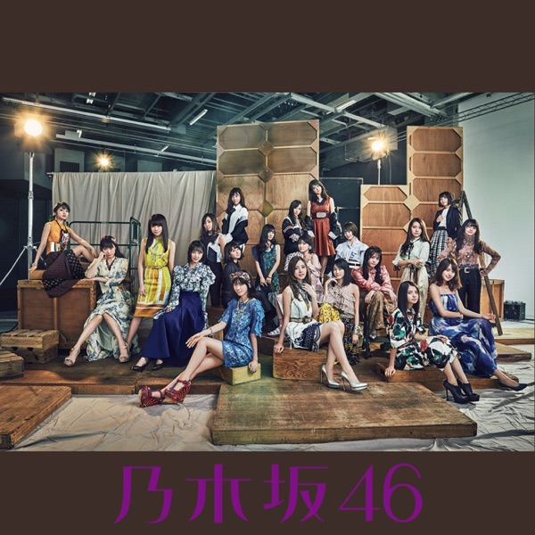
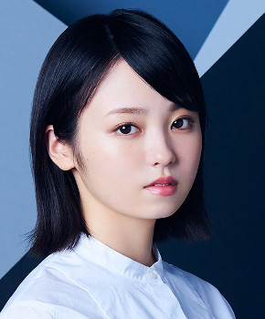
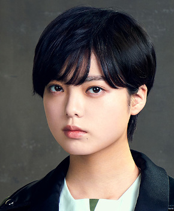

サカミチ
サカミチ誰のことを一番 愛してる？だれのことをいちばんあいしてる

初収録リリース「インフルエンサー」のジャケット
坂道AKB
発売日：2017-03-15
収録：インフルエンサー（AKBSG）
種別：坂道AKB楽曲
センター：平手友梨奈
作曲：佐久間和宏
編曲：佐久間和宏
ライブ披露：5件
フォーメーション
上が後列、下が前列です。色付きがセンター。（参考データに基づく）
 渡邉理佐
渡邉理佐 北野日奈子
北野日奈子小栗有以
 菅井友香
菅井友香小嶋真子
 寺田蘭世
寺田蘭世 渡辺梨加
渡辺梨加
今泉佑唯岡田奈々
 伊藤万理華
伊藤万理華向井地美音
 長濱ねる
長濱ねる 星野みなみ
星野みなみ 齋藤飛鳥
齋藤飛鳥宮脇咲良

平手友梨奈松井珠理奈
 堀未央奈
堀未央奈参加メンバー（18名）
伊藤万理華、齋藤飛鳥、星野みなみ、北野日奈子、寺田蘭世、堀未央奈、今泉佑唯、菅井友香、長濱ねる、平手友梨奈、渡辺梨加、渡邉理佐、向井地美音、宮脇咲良、小嶋真子、小栗有以、岡田奈々、松井珠理奈